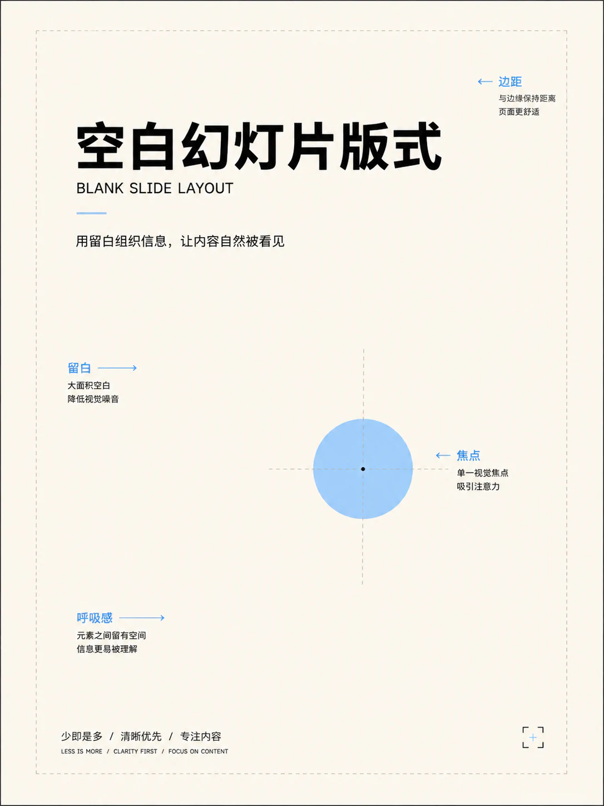

边距
原海报：「与边缘保持距离，页面更舒适。」守住投影四边安全区，画面才有从容感。
NO. 341 演示文稿页面 / 基础幻灯片
BLANK SLIDE LAYOUT
0/4 · 填满焦虑用留白组织信息，让内容自然被看见
横拖空纸或虚线框调边距 · 直拖蓝圆与文字调呼吸距 · 点红框杂物扫除冗余 方向键微调 · Space 翻页实测
很多人面对空白幻灯片时会下意识加边框、贴角标、补备注。结果实心块吃掉 63% 的画布，留白退化成夹缝，眼睛同时被 3 处元素拉扯，空白版式彻底失效。
直接点击画布上红色虚线标出的杂物块把它们扫出画面，再在空纸面向右横拖撑开安全边距。
Figure, Ground & Cognitive Relief
原海报用一句话概括空白幻灯片版式：「用留白组织信息，让内容自然被看见。」人眼看屏幕时，并不是把所有像素平权读完，而是瞬间把画面分成「图（值得看的焦点）」和「底（可以忽略的背景）」。按心理学家理查德·迈耶在 2001 年《多媒体学习》里提出的一致性原则与冗余原则，删去与核心无关的装饰边框、多余页脚和重复口播文字，视觉通道才不会和听觉通道打架。
左右拖动中间拉帘：同一份「复购率 78%」内容，左侧塞满模板噪音，右侧只保留边距、留白与单一焦点。
原海报：「与边缘保持距离，页面更舒适。」守住投影四边安全区，画面才有从容感。
原海报：「大面积空白，降低视觉噪音。」让纸面退成安静底场，主体不争自显。
原海报：「单一视觉焦点，吸引注意力。」全场只立一个主角，避免两处色块打架。
原海报：「元素之间留有空间，信息更易被理解。」外围空还不够，字图之间也要通气。
Origins of Active Whitespace & Blank Slides
空白幻灯片并非软件里凑数的「空页」。从二十世纪初感知心理学的图底研究、现代主义印刷对空白的重新发明，到 1987 年演示软件引入母版与零占位符版式，再到二十一世纪初对抗「项目符号墙」的极简演讲运动，这条脉络走了整整一百年。点选下方四个真实节点，看空白怎样一步步从「印剩下的地盘」变成组织信息的工具。
《视觉经验中的图形》（Synsoplevede Figurer）
轮廓只归属于「图」，周围安静的连续面退为「底」
Four Coupled Spatial Forces
新手做空白幻灯片最常掉进「只守住一条」的坑：比如留白够大，但元素死贴边缘；或者四边空得很舒服，字和图却在正中间挤成一团。点击下方四枚独立开关，任意打破其中一项或几项，观察 16 种空间组合里画面为什么会立刻散架。
When Blank Beats Standard Placeholders
在「演示文稿页面 / 基础幻灯片」这一小类的九种常见母版中，前八种都替你预置好了固定占位符；只有 341 空白幻灯片版式 是零占位符的自由画布。它最拿手的角色，是在密集汇报中制造「节奏断点」、展示定制单物视觉或打破僵硬框架。点选下方五种真实汇报场景，看哪一幕该用本页，哪一幕该直接交给兄弟版式。
When Not to Use Blank Slides
留白不是万能审美滤镜。空白幻灯片之所以在现场演讲里有力，是因为讲者的声音实时填补了上下文；一旦脱离这个前提，照搬大片空白反而会拖垮信息传达。点击下面四张常见翻车病例，查看替代对策。
Single-Variable Eye Check
Original Poster & Keywords

这张原海报本身就是「空白幻灯片版式」的范本：通篇使用柔和的暖米画纸（#FAF7ED），四周仅用一道极轻的石青灰细虚线勾出安全边距；左上置入干净无饰的纯黑大标「空白幻灯片版式」、英文副标、一抹天蓝短杠与一句总述；整张画面逾八成敞开呼吸，只在中右偏下放进一枚清透的天蓝实心圆（#A0CDF9）与细虚线坐标轴、纯黑中心点，再由四条细蓝箭头安静指出「边距」「留白」「焦点」「呼吸感」，右下以极简角标收口。